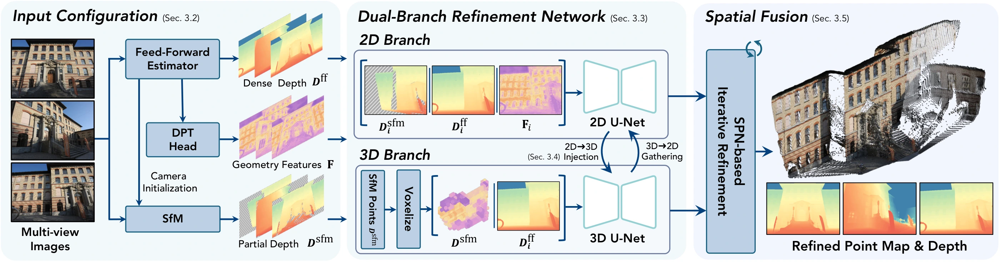

Stage 1
Input configuration
We start with dense feed-forward predictions and accurate but incomplete SfM geometry.
Preprint 2026
KAIST AI

Stage 1
We start with dense feed-forward predictions and accurate but incomplete SfM geometry.
Stage 2
Refin3R uses image context and SfM points from multiple views to improve the initial predictions.
Stage 3
The refined estimates are combined into dense, accurate 3D reconstructions.
ScanNet++, 1 of 5
AUC@1 / AUC@5 cm (%) ↑ Higher is better
| Method | 4 views | 8 views | 16 views |
|---|---|---|---|
| Depth Anything 3 | 1.6 / 8.8 | 0.9 / 7.1 | 0.6 / 4.7 |
| Pi3X (RGB only) | 14.7 / 50.4 | 15.3 / 53.9 | 14.3 / 54.8 |
| VGGT-Ω | 2.1 / 16.3 | 1.3 / 13.5 | 1.0 / 11.9 |
| MapAnything | 15.6 / 43.9 | 13.3 / 43.8 | 12.5 / 42.0 |
| Pi3X (SfM prior) | 17.3 / 52.1 | 18.2 / 55.5 | 18.3 / 58.3 |
| Any2Full | 22.9 / 50.0 | 28.6 / 59.6 | 32.0 / 65.1 |
| Murre | 16.6 / 44.1 | 21.3 / 53.1 | 23.9 / 57.4 |
| MASt3R-SfM | 11.5 / 30.8 | 15.6 / 41.0 | 18.9 / 49.2 |
| BLASt3R | 27.8 / 57.1 | 34.5 / 64.7 | 39.2 / 67.5 |
| GGPT (w/ DA3) | 21.6 / 45.0 | 27.4 / 56.9 | 31.8 / 64.5 |
| GGPT (w/ Pi3X) | 25.6 / 56.7 | 29.5 / 62.8 | 34.8 / 67.8 |
| Refin3R (w/ DA3) | 31.5 / 60.6 | 37.5 / 68.8 | 43.4 / 74.0 |
| Refin3R (w/ Pi3X) | 33.7 / 65.6 | 39.6 / 71.4 | 45.2 / 75.7 |
Bold: best. Underlined: second best. Table 1 of the paper.
AUC@1 / AUC@5 cm (%) ↑ Higher is better
| Method | 4 views | 8 views | 16 views |
|---|---|---|---|
| Depth Anything 3 | 8.9 / 31.9 | 8.0 / 29.6 | 7.0 / 27.1 |
| Pi3X (RGB only) | 9.8 / 34.8 | 6.1 / 28.8 | 4.8 / 26.4 |
| VGGT-Ω | 4.1 / 25.6 | 3.1 / 22.2 | 2.2 / 17.2 |
| MapAnything | 6.8 / 27.3 | 6.3 / 25.0 | 5.3 / 25.2 |
| Pi3X (SfM prior) | 15.6 / 43.7 | 12.9 / 40.0 | 10.2 / 37.9 |
| Any2Full | 24.8 / 49.3 | 28.5 / 55.4 | 30.4 / 58.9 |
| Murre | 13.0 / 34.4 | 13.6 / 35.4 | 15.2 / 38.7 |
| MASt3R-SfM | 15.0 / 37.4 | 17.5 / 37.7 | 16.7 / 39.0 |
| BLASt3R | 11.7 / 31.2 | 13.6 / 34.9 | 14.2 / 38.4 |
| GGPT (w/ DA3) | 27.7 / 56.2 | 28.4 / 58.7 | 32.6 / 64.4 |
| GGPT (w/ Pi3X) | 31.7 / 60.0 | 32.7 / 62.0 | 39.4 / 69.1 |
| Refin3R (w/ DA3) | 42.7 / 67.3 | 46.4 / 69.9 | 53.6 / 76.1 |
| Refin3R (w/ Pi3X) | 43.1 / 67.6 | 46.3 / 70.2 | 53.3 / 76.4 |
Bold: best. Underlined: second best. Table 1 of the paper.
AUC@1 / AUC@5 cm (%) ↑ Higher is better
| Method | 4 views | 8 views | 16 views |
|---|---|---|---|
| Depth Anything 3 | 1.1 / 8.7 | 0.7 / 7.1 | 0.5 / 6.3 |
| Pi3X (RGB only) | 5.1 / 25.2 | 3.9 / 23.5 | 3.4 / 22.7 |
| VGGT-Ω | 2.0 / 16.0 | 1.5 / 14.6 | 0.9 / 9.9 |
| MapAnything | 3.4 / 18.7 | 2.5 / 15.1 | 2.2 / 14.7 |
| Pi3X (SfM prior) | 8.9 / 33.6 | 8.1 / 34.9 | 6.4 / 30.7 |
| Any2Full | 12.1 / 34.4 | 13.1 / 42.1 | 13.9 / 42.7 |
| Murre | 5.5 / 22.2 | 6.6 / 25.7 | 7.7 / 28.2 |
| MASt3R-SfM | 14.9 / 35.1 | 18.2 / 41.6 | 17.7 / 41.4 |
| BLASt3R | 4.1 / 19.1 | 5.2 / 22.7 | 5.0 / 22.8 |
| GGPT (w/ DA3) | 14.9 / 36.9 | 16.0 / 46.1 | 16.0 / 47.1 |
| GGPT (w/ Pi3X) | 16.1 / 38.5 | 19.1 / 49.7 | 19.7 / 49.4 |
| Refin3R (w/ DA3) | 15.6 / 40.3 | 20.5 / 52.1 | 21.8 / 53.1 |
| Refin3R (w/ Pi3X) | 17.1 / 39.7 | 21.5 / 52.0 | 22.4 / 52.3 |
Bold: best. Underlined: second best. Table 1 of the paper.
AUC (%) ↑ Higher is better
| Method | AUC@1 cm | AUC@5 cm |
|---|---|---|
| Depth Anything 3 | 2.1 | 6.3 |
| Pi3X (RGB only) | 3.6 | 11.8 |
| VGGT-Ω | 42.0 | 81.6 |
| MapAnything | 7.2 | 29.8 |
| Pi3X (SfM prior) | 45.7 | 76.9 |
| Any2Full | 63.2 | 79.7 |
| Murre | 48.5 | 74.1 |
| MASt3R-SfM | 51.1 | 70.1 |
| BLASt3R | 13.9 | 39.6 |
| GGPT (w/ DA3) | 50.7 | 71.2 |
| GGPT (w/ Pi3X) | 64.6 | 82.1 |
| Refin3R (w/ DA3) | 75.1 | 83.6 |
| Refin3R (w/ Pi3X) | 80.2 | 89.6 |
Bold: best. Underlined: second best. Table 2 of the paper.
AUC (%) ↑ Higher is better
| Method | AUC@1 mm | AUC@5 mm |
|---|---|---|
| Depth Anything 3 | 17.2 | 50.7 |
| Pi3X (RGB only) | 3.9 | 21.1 |
| VGGT-Ω | 17.7 | 54.0 |
| MapAnything | 32.2 | 69.1 |
| Pi3X (SfM prior) | 33.8 | 65.2 |
| Any2Full | 65.3 | 84.1 |
| Murre | 59.5 | 81.7 |
| MASt3R-SfM | 43.9 | 64.6 |
| BLASt3R | 24.6 | 50.8 |
| GGPT (w/ DA3) | 67.0 | 83.1 |
| GGPT (w/ Pi3X) | 62.6 | 76.6 |
| Refin3R (w/ DA3) | 72.3 | 87.4 |
| Refin3R (w/ Pi3X) | 68.9 | 83.7 |
Bold: best. Underlined: second best. Table 2 of the paper.
Showing ScanNet++ results.
@misc{lee2026refin3rgeometryguidedrefinementfeedforward,
title={Refin3R: Geometry-Guided Refinement for Feed-Forward 3D Reconstruction},
author={Jongmin Lee and Jaeyeong Kim and Seungryong Kim},
year={2026},
eprint={2611.23051},
archivePrefix={arXiv},
primaryClass={cs.CV},
url={https://arxiv.org/abs/2611.23051},
}
To be updated